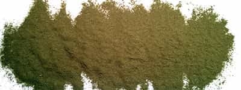

Sponsored Article is ROK's official account that publishes sponsored articles from advertisers. If you are interested hiring a sponsored article for your site, product, or service, visit our advertising page.


The following article is sponsored by Good Looking Loser and written by Donovan Sharpe.
If you read ROK on the regular, you’ve probably noticed there’s been some discussion about a compound called Kratom. Chances are, you probably haven’t heard of it until recently or immediately dismissed it because it’s a natural compound that promises to do a lot of things. This is perfectly understandable.
Personally, I hadn’t heard of the compound until I read Eric Crowley’s post on it back in March, which piqued my interest. I’m always pretty skeptical of “au naturale” plants because there are so few that actually deliver what they promise to.
To my surprise, Kratom not only delivered, it surpassed my expectations. I currently use it regularly in my weekly regimen and it greatly enhances my performance in many different areas.
I’m going to tell you a little bit about the compound, what you can expect, and how it fits into my life.

In a nutshell Kratom is plant that originates from Southeast Asia and is a distant cousin of the coffee bean. It stimulates your opioid receptors and gives you feelings of elation and energy (intensity depends on the strain) without the less than desirable side effects you get from drugs like marijuana or other opiates.
The first Kratom strain I tried was a Bali/Indo fusion—a good strain for beginners. I took 3 grams (about 1 teaspoon) using the “toss & wash method” which is scooping the Kratom directly into your mouth and simply washing it down with water (you might prefer to mix it with juice or Gatorade however).

About 15 minutes later I felt my mood and energy starting to improve. A few minutes later I felt a sharp increase in my overall contentment and began to think of things I was thankful for and how great my life was. That may sound a bit cheesy but that’s really what happened and was pretty cool.
Before I knew it I was thinking about how much I was looking forward to the process of improving my finances, my body, and my life. This all happened within the first half hour of ingesting Kratom and the feeling and energy stayed with me for a solid four hours.
I’m the type of person who monitors his daily intake of any substance so as to not build a tolerance or addiction. That said, I use Kratom 3 to 5 times a week.
Most of the time I use it on days I lift. My go to strains are Hyper Hippo, Red Hot Hippo, and Rock Star Hippo on Mondays, Wednesdays, and Fridays respectively. These are all faster strains which give me an insane energy burst. Each of these takes between 5 and 10 minutes to take effect as opposed to the standard 20 to 30 minutes that slower strains take to start working.

I tend to use moderate to slower strains when I need a kick in the pants mood-wise. Some days I’m just in a crappy mood for no good reason. Hell, we all have those days. Kratom is extremely effective in getting me out of a funk on any given day. Happy Hippo I and White Hippo are the strains I typically burn when I need an attitude adjustment. Slow strains are more for mood or well-being, while the faster strains are more for productivity and energy.
Everyone’s body chemistry is different so one’s first experience with Kratom may vary from person to person. However, I would recommend burning Happy Hippo I the first time you try it. More importantly do it in a fasted state (not having eaten anything for at least 8 hours) to get the best effect possible.
Upon consuming Kratom you’ll start to notice the effects around the 15 to 20 minute mark. Depending the length of your fast, the feeling will intensify at the 30 to 35 minute mark and remain there until it wears off.
Do not burn more than 3 grams your first time! Taking too much Kratom in the beginning will make you nauseous and/or drowsy and will increase your tolerance. I made this mistake the 3rd time I took it and had a very bad and unproductive day. Unlocking Kratom’s potential will require some trial and error and will vary from person to person.

Less is more
Take it slow, rotate strains daily, and dose it between between 2 and 3 grams and you’ll experience that same first time feeling just about every time you take Kratom. You may have to increase the dose, but it’s better to start on the low end and work your way up.
Natural compounds I’ve tried in the past have had little to no affect on me on account of my past experience with recreational drugs. Hippo Kratom, however, worked and worked well the first time I tried it and is still as effective as it was on day one.
Hippo Kratom is definitely as advertised and can be life changing in many ways. I personally recommend anyone looking to gain a physical or mental edge to give Kratom a try because it will be well worth it if it works for you as well as it has worked for me.
If you are totally new to Kratom, check out Hippo’s Newbie Pack that contains a variety of strains to try.
–Donovan Sharpe, Return of Kings